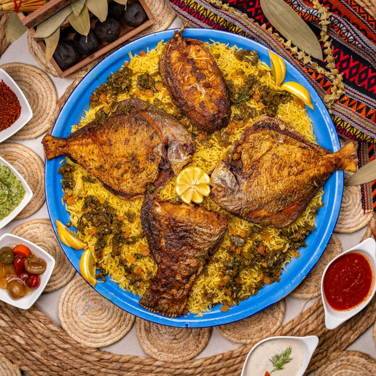
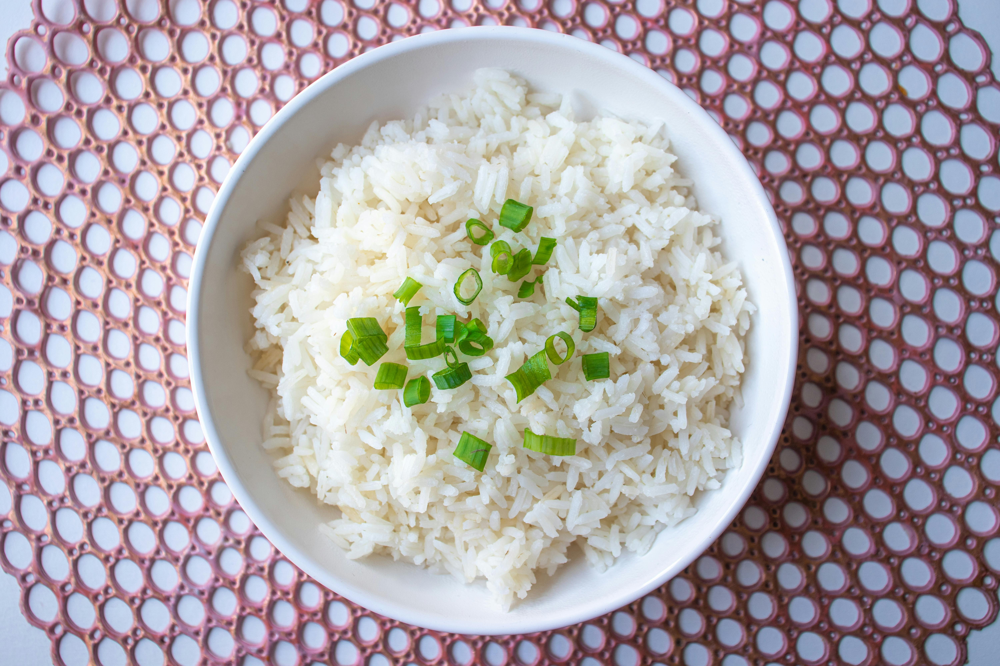

Enjoy rice and fish from the local food chain "Fishes and Rices." Fishes and Rices has been in business for
over 100 years and has made a name for itself, establishing 10 different stores across the island. When you visit, they will be sure to provide exceptional food and service for your vacation or business trip!
Business Locations:
--1 Road Road
--2 Roady Road
--3 RoadRoad Road
--45 Dirt Road
--43 Tropical Road
--33 Sandy Road
--13 Rock Road
--234 Sandy Rock Road
--334 Sandy Dirt Road
--133 Road Sand Road

Enjoy burgers from the American chain "Burger Burger". Burger Burger provides a generous deal on their burgers and fries platter.
Business Locations:
--2 Road Road
--3 Roady Road
--4 RoadRoad Road

Enjoy Pan-Asian cuisine from the chain "Pan-Asia". Pan Asia serves their specialty dish - "Rich with Onions" - for a generous price, recieving rave reviews from locals.
Business Locations:
--3 Road Road
--14 Rock Road